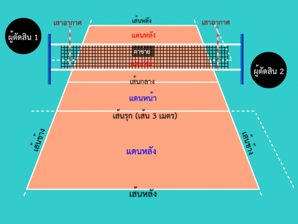

กฎการเล่นวอเลย์บอล
สนามมาตรฐานที่ใช้แข่งขันมีลักษณะเป็นรูปสี่เหลี่ยมผืนผ้าขนาด 18 x 9 เมตร ล้อมรอบด้วยเขตรอบสนาม กว้างอยางน้อย 3 เมตร ทุกด้าน ที่ว่างเหนือพื้นต้องไม่มีสิ่งใดกีดขวาง สูงขึ้นไปอย่างน้อย 7 เมตร จากพื้นสนาม แต่สําหรับการแข่งขันระดับโลกของสหพันธ์วอลเลย์บอลนานาชาติและการแข่งขันที่เป็นทางการ เขตรอบสนามต้องกว้างอย่างน้อย 5 เมตร จากเส้นข้าง และ 6.5 เมตร จากเส้นหลัง ที่ว่างเหนือสนามต้องสูงจากพื้นขึ้นไปอย่างน้อย 12.50 เมตร
